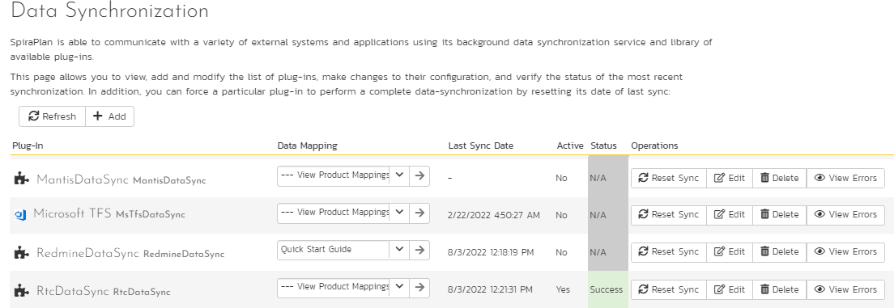
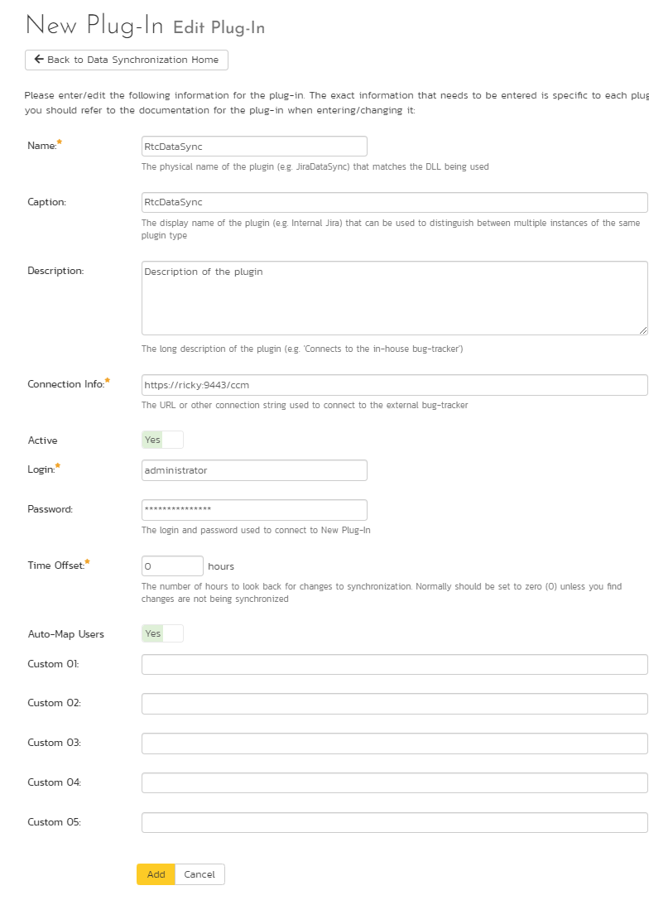
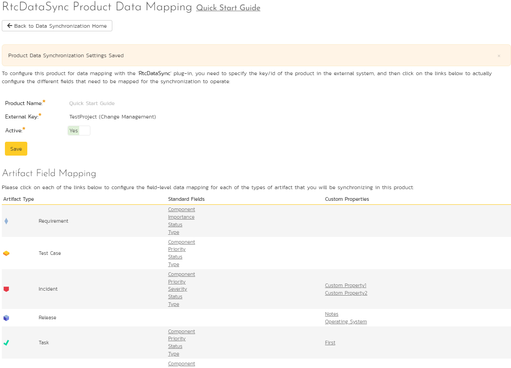
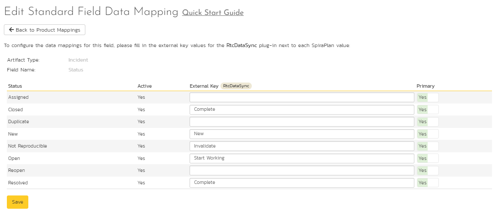
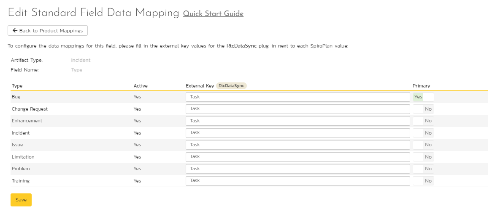
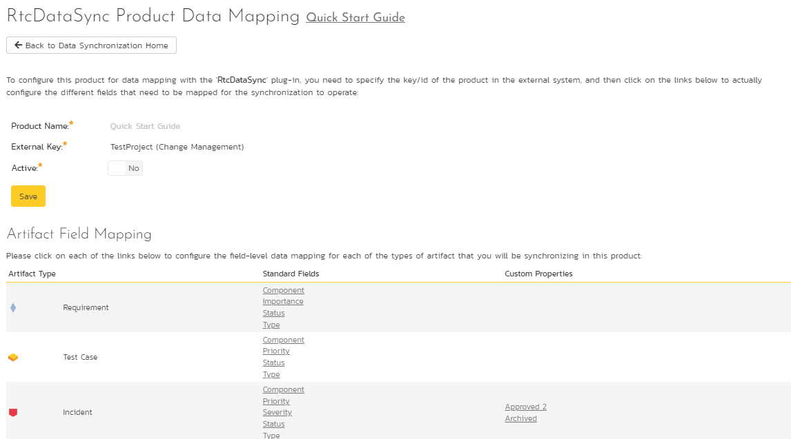
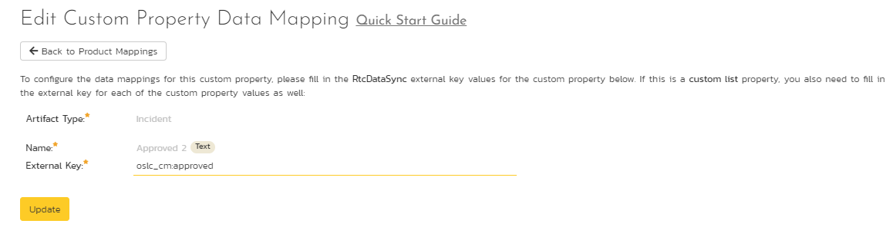
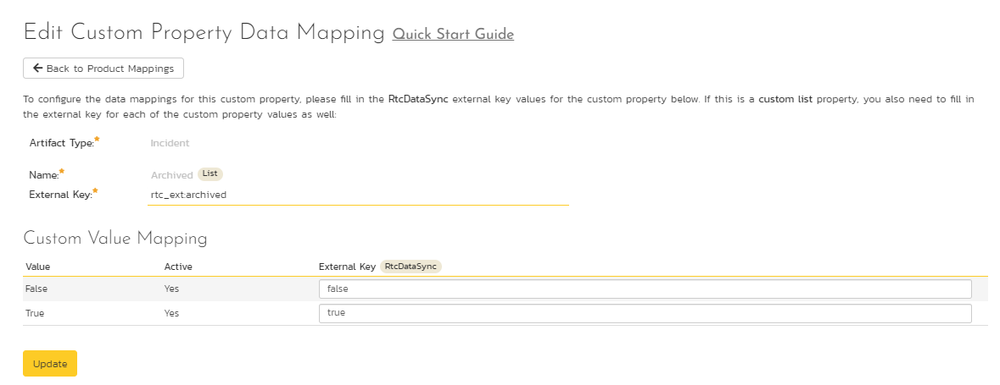

Using SpiraTeam with IBM RTC¶
This section outlines how to use SpiraTest, SpiraPlan or SpiraTeam (hereafter referred to as SpiraTeam) in conjunction with the IBM Rational Team Concert (hereafter referred to as RTC) work item tracking system. The built-in integration service allows the quality assurance team to manage their requirements and test cases in SpiraTeam, execute test runs in SpiraTest, and then have the new incidents generated during the run be automatically loaded into RTC.
Once the incidents are loaded into RTC as work items, the development team can then manage the lifecycle of these work items in RTC, and have the status changes in RTC be reflected back in SpiraTeam. In addition, any issues logged directly into RTC will get imported into SpiraTeam so that they can be linked to test cases and requirements.
Set up data synchronization
STOP! Please make sure you have first read the instructions to set up the data sync before proceeding!
Configuring the Plug-In¶
The next step is to configure the plug-in within SpiraTeam so that the system knows how to access the RTC server. To start the configuration, please open up SpiraTeam in a web browser, log in using a valid account that has System-Administration level privileges and click on the System > Data Synchronization administration option from the left-hand navigation:

This screen lists all the plug-ins already configured in the system. Depending on whether you chose the option to include sample data in your installation or not, you will see either an empty screen or a list of sample data-synchronization plug-ins.
If you already see an entry for RtcDataSync you should click on its "Edit" link. If you don't see such an entry in the list, please click on the [Add] button instead. In either case you will be taken to the following screen where you can enter or modify the RTC Data-Synchronization plug-in:

You need to fill out the following fields for the RTC Plug-in to operate correctly:
-
Name -- this needs to be set to RtcDataSync. This needs to match the name of the plug-in DLL assembly that was copied into the C:\Program Files\SpiraTeam\Bin folder (minus the .dll file extension). If you renamed the RtcDataSync.dll file for any reason, then you need to change the name here to match.
-
Description -- this should be set to a description of the plug-in. This is an optional field that is used for documentation purposes and is not actually used by the system.
-
Connection Info -- this should be the base URL for connecting to your instance of RTC (for example https://servername:9443/ccm).
-
Login -- this should be set to a valid login for your RTC installation. The login needs to have permissions to create and view work items within RTC.
-
Password -- this should be set to the password of the login specified above.
-
Time Offset -- normally this should be set to zero, but if you find that issues being changed in RTC are not being updated in SpiraTeam, try increasing the value as this will tell the data-synchronization plug-in to add on the time offset (in hours) when comparing date-time stamps. Also if your RTC installation is running on a server set to a different time-zone, then you should add in the number of hours difference between the servers' time-zones here.
-
Auto-Map Users -- this is not currently used and can be ignored.
-
Custom 01 -- this is not currently used and can be ignored
-
Custom 02 -- this is not currently used and can be ignored
-
Custom 03 -- this is not currently used and can be ignored
-
Custom 04 -- this is not currently used and can be ignored
-
Custom 05 -- this is not currently used and can be ignored
Configuring the Data Mapping¶
Next, you need to configure the data mapping between SpiraTeam and RTC. This allows the various projects, users, incident statuses, priorities, severities and custom property values used in the two applications to be related to each other. This is important, as without a correct mapping, there is no way for the integration service to know that a "New" item in SpiraTeam is equivalent to a "New" item in RTC (for example).
The following mapping information needs to be setup in SpiraTeam:
The mapping of the project identifiers for the projects that need to be synchronized
The mapping of the various standard fields in the system
The mapping of the various custom properties in the system
Each of these is explained in turn below:
Configuring the Project Mapping¶
From the data synchronization administration page, you need to click on the "View Project Mappings" hyperlink next to the RTC plug-in name. This will take you to the data-mapping home page for the currently selected project:

If the project name does not match the name of the project you want to configure the data-mapping for, click on the "(Change Project)" hyperlink to change the current project.
To enable this project for data-synchronization with RTC, you need to enter:
External Key -- This should be set to the display name of the project in RTC that will be mapped to the specific SpiraTeam project.
Active Flag -- Set this to 'Yes' so that SpiraTeam knows that you want to synchronize data for this project. Once the project has been completed, setting the value to "No" will stop data synchronization, reducing network utilization.
Click [Update] to confirm these settings. Once you have enabled the project for data-synchronization, you can now enter the other data mapping values outlined below.
Note: Once you have successfully configured the project, when creating a new project, you should choose the option to "Create Project from Existing Project" rather than "Use Default Template" so that all the project mappings get copied across to the new project.
Configuring the Standard Field Mapping¶
Now that the projects, user and releases have been mapped correctly, we need to configure the standard incident fields. To do this, go to Administration > System > Data Synchronization and click on the "View Project Mappings" for the RtcDataSync plug-in entry:
From this screen, you need to click on Status and Type in turn to configure their values:
a) Incident Status
Click on the "Status" hyperlink under Incident Standard Fields to bring up the Incident status mapping configuration screen:

The table lists each of the incident statuses available in SpiraTeam and provides you with the ability to enter the matching RTC work item status name for each one. You can map multiple SpiraTeam fields to the same RTC fields (e.g. Closed and Resolved in SpiraTeam are both equivalent to Complete in RTC), in which case only one of the two values can be listed as Primary = Yes as that's the value that's used on the reverse synchronization (from RTC > SpiraTeam).
b) Incident Type
Click on the "Type" hyperlink under Incident Standard Fields to bring up the Incident type mapping configuration screen:

The table lists each of the incident types available in SpiraTeam and provides you with the ability to enter the matching RTC work item type name for each one. You can map multiple SpiraTeam fields to the same RTC fields, in which case only one of the two values can be listed as Primary = Yes as that's the value that's used on the reverse synchronization (from RTC > SpiraTeam).
Configuring the Custom Property Mapping¶
Now that the various SpiraTeam standard fields have been mapped correctly, we need to configure the custom property mappings. This is used to associate custom properties in SpiraTeam that map to custom fields in RTC. From the View/Edit Project Data Mapping screen, you need to click on the name of the Incident Custom Property that you want to add data-mapping information for.
We will consider the two different types of mapping that you might want to enter:

a) Text Custom Properties
Click on the hyperlink of the text custom property under Incident Custom Properties to bring up the custom property mapping configuration screen. For text custom properties there will be no values listed in the lower half of the screen.

You need to obtain the fully qualified XML name of the custom field in RTC that matches this custom property in SpiraTeam from the RTC documentation. Once you have entered the name of the custom field, click [Update].
b) List Custom Properties
Click on the hyperlink of the list custom property under Incident Custom Properties to bring up the custom property mapping configuration screen. For list custom properties there will be a textbox for both the custom field itself and a mapping table for each of the custom property values that need to be mapped:

First you need to obtain the fully qualified XML name of the field in RTC that matches this custom property in SpiraTeam. This should be entered in the 'External Key' field below the name of the custom property. Then you need enter the possible values in RTC for the custom property, mapping each one to the corresponding SpiraTeam custom property value.
**Once you have updated the various mapping sections, you are now ready to use the service. **
Using SpiraTeam with RTC¶
Now that the integration service has been configured and the service started, initially any incidents created in SpiraTeam for the specified projects will be imported into RTC and any existing work items in RTC will get loaded into SpiraTeam
At this point we recommend opening the Windows Event Viewer and choosing the Application Log. In this log any error messages raised by the SpiraTeam Data Sync Service will be displayed. If you see any error messages at this point, we recommend immediately stopping the SpiraTeam service and checking the various mapping entries. If you cannot see any issues with the mapping information, we recommend sending a copy of the event log message(s) to Inflectra customer services (http://www.inflectra.com/Support) who will help you troubleshoot the problem.
To use SpiraTeam with RTC on an ongoing basis, we recommend the following general processes be followed:
When running tests in SpiraTest or SpiraTeam, defects found should be logged through the Test Execution Wizard as normal.
Developers using RTC can log new work items into either SpiraTeam or RTC. In either case they will get loaded into the other system.
Once created in one of the systems and successfully replicated to the other system, the incident should not be modified again inside SpiraTeam
At this point, the incident should not be acted upon inside SpiraTeam and all data changes to the issue should be made inside RTC. To enforce this, you should modify the workflows set up in SpiraTeam so that the various fields are marked as inactive for all the incident statuses other than the "New" status. This will allow someone to submit an incident in SpiraTeam, but will prevent them making changes in conflict with RTC after that point.
As the issue progresses through the customized RTC workflow, changes to the type of work item, changes to its status, description and custom fields will be updated automatically in SpiraTeam. In essence, SpiraTeam acts as a read-only viewer of these incidents.
You are now able to perform test coverage and incident reporting inside SpiraTest/SpiraTeam using the test cases managed by SpiraTest/SpiraTeam and the incidents managed on behalf of SpiraTest/SpiraTeam inside RTC.